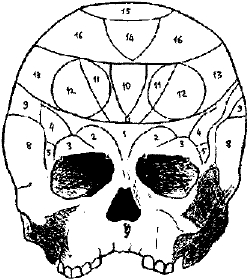

Ara ş t ı rma Serisi No.13
¯¯¯¯¯¯¯¯¯¯¯¯¯¯¯¯¯¯¯¯¯¯¯¯¯¯¯¯¯¯¯¯¯¯
10
Yüz Okuma Sanat ı
¯¯¯¯¯¯¯¯¯¯¯¯¯¯¯¯¯¯¯¯¯¯¯¯¯¯¯¯¯¯¯¯¯¯
9. E ğ itilme, ehlile ş tirilme 10. Mekan içgüdüsü 11. Yüz haf ı zas ı 12. Sözel haf ı za
13. Benzerli ğ i h ı zl ı alg ı lama yetene ğ i 14. Metafizik ak ı l 15. Zeka
16. Ş iirsel yetenek
17. İ yi kalplilik, aç ı k yüreklilik 18. İ mitasyon, taklit 19. Dini içgüdü
20. İ stikrarl ı l ı k, dengelilik 21. Tedbirlilik, dikkatlilik 22. Ki ş ilik içgüdüsü
23. Görünümü muhafaza etme içgüdüsü
24. Dü ş üncelerini kolayca ifade ederek konu ş abilme yetene ğ i 25. Ses hissi
26. Mekanik içgüdü 27. Say ı sal his
28. Dostluk, egemenlik alt ı nda olma. 29. Suçluluk, h ı rs ı zl ı k.
◄ Ş ekil 3. İ nsan Kafatas ı 1. E ğ itilme yetene ğ i 2. Yer ve yön hissi Ki ş ilik hisleri 3. Renk hissi 4. Ses hissi 5. Say ı
6. Konu ş ma
7. Dil yetene ğ i 8. Sanat hissi

10. 11. 12. 13. 14. 15.
9. H ı rs ı zl ı k
Benzerliyi h ı zl ı alg ı lama yetene ğ i Felsefi zeka (12 ile birle ş iyor) Muhakeme hissi
Organizatörlük yetene ğ i (9,10-12,14) iyi kalplilik Dini konulara ilgi
Taklit, imitasyon hissi (14 ile birle ş iyor)
__________________________________________________________________
© WWW.MAXIMUMBILGI.COM